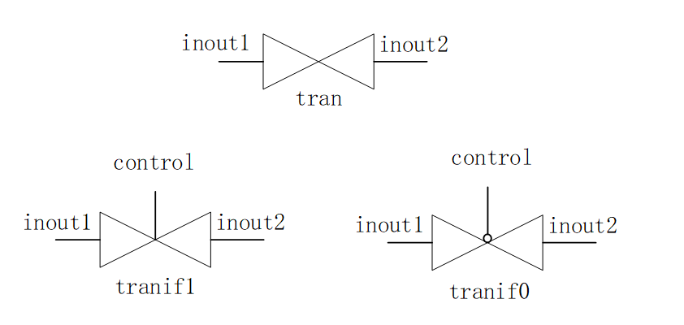

Keywords: MOS, CMOS, bidirectional switch, PAD
Switch-level modeling is a design at a lower level of abstraction than gate-level modeling. In rare cases, designers may choose to use transistors as the underlying modules of a design. With the increase in circuit design complexity and the emergence of advanced tools, switch-based digital design has gradually declined. Currently, Verilog only provides digital design capability using logic values 0, 1, x, z with associated drive strengths. Therefore, transistors in Verilog are also treated only as on or off switches.
MOS Switch
There are 2 types of MOS switches, declared using the following keywords:
nmos（N 类型 MOS 管） pmos（P 类型 MOS 管） rnmos （带有高阻抗的 NMOS 管） rpmos（带有高阻抗的 PMOS 管）
MOS transistors are used to model switch logic. Data flows from input to output, and the data flow can be enabled or disabled by appropriate settings.
For MOS transistors with impedance, the impedance from source to drain is high, and the signal strength is reduced when passing signals.
The MOS transistor switch structure diagram is shown below.

When instantiating, the first port of the MOS transistor is the output, the second port is the data input, and the third port is the control input.
Example
pmos pmos1 (OUTX, IN1, CTRL1) ;
//no instantiation name
nmos (OUTX1, IN1, CTRL2) ;
The MOS transistor truth table is shown below, very similar to a tri-state gate.
| nmos | Control terminal | pmos | Control terminal | |||||||
|---|---|---|---|---|---|---|---|---|---|---|
| 0 | 1 | x | z | 0 | 1 | x | z | |||
| 0 | z | 0 | 0/z | 0/z | 0 | 0 | z | 0/z | 0/z | |
| 1 | z | 1 | 1/z | 1/z | 1 | 1 | z | 1/z | 1/z | |
| x | z | x | x | x | x | x | z | x | x | |
| z | z | x | x | x | z | x | z | x | x |
CMOS Switch
CMOS switches are declared with keywords cmos and rcmos (with high impedance).
CMOS has one data output, one data input, and two control inputs. The structure diagram is as follows:

The signals PControl and NControl are usually complementary. When NControl is 1 and PControl is 0, the switch turns on. When NControl is 0 and PControl is 1, the switch output is high impedance. A CMOS switch can be regarded as a combination of NMOS and PMOS switches.
When instantiating, the first port of the CMOS transistor is the output, the second is the data input, the third is the NControl control input, and the fourth is the PControl control input.
The CMOS switch instantiation format is as follows.
Example
cmos c1 (OUTY, IN1, NCTRL, PCTRL) ;
//no instantiation name
cmos (OUTY1, IN1, NCTRL, PCTRL) ;
Since CMOS can be regarded as a combination of NMOS and PMOS switches, these two MOS switches can also be used to build a CMOS switch, as follows:
Example
nmos n2 (OUTY, IN1, NCTRL) ;
pmos p2 (OUTY, IN1, PCTRL) ;
The CMOS truth table is similar to MOS switches. Note the complementarity of the NControl and PControl signals.
Bidirectional Switch
NMOS, PMOS, and CMOS switch gates all conduct from drain to source, with unidirectional direction. Verilog also provides switch devices with bidirectional conduction, where data can flow in both directions, and signals on both sides can be driving signals.
The keywords for bidirectional switches and their impedance modes are declared as follows:
tran tranif1 tranif0 rtran rtranif1 rtranif0
The bidirectional switch structure diagram is as follows:

The tran switch is a direct buffer between two signals; either inout1 or inout2 can be the driving signal.
The tranif1 switch conducts between the two signals only when the control signal is 1. When control is 0, the two signals are disconnected; signals with a driver maintain the signal value consistent with the driver, while signals without a driver present a high-impedance state.
The same applies to tranif0.
Therefore, bidirectional switches are often used for isolation between buses or signals.
When instantiating, the first two ports of the bidirectional switch
are data terminals, and the third port is the control input.
An example of bidirectional switch instantiation is as follows:Example
//no instantiation name
tranif1 (inout1, inout2, control) ;
Power and Ground
Transistor-level circuits require a source (Vdd, logic 1) and ground (Vss, logic 0), defined using the keywords supply1 and supply0, respectively. Usage is as follows:
Example
supply0 GND ;
wire siga = VDD ; //siga is connected to logic 1
wire sigb = GND ; //sign is connected to logic 0
PAD Model Simulation
In section "5.1 Verilog Modules and Ports" of the "Verilog Tutorial", the writing and simulation of PAD models were covered. Below, a tri-state gate is used to reshape the PAD model, with fixed pull-up and pull-down functions, and bidirectional switches are used to test PAD connectivity.
A PAD model with pullup function written using a tri-state gate is as follows. To get the pulldown function PAD model, just switch the comments.
Example
//DIN, pad driver when pad configured as output
//OEN, pad direction(1-input, o-output)
input DIN, OEN ,
inout PAD ,
//pad load when pad configured as input
output DOUT
);
//input:(not effect pad external input logic), output: DIN->PAD
bufif0 (PAD, DIN, OEN) ; //0-output
bufif1 (DOUT, PAD, OEN) ; //1-input
pullup (PAD);
//pulldown (PAD); //pulldown
endmodule
A testbench using bidirectional switches to control PAD IO connectivity is written as follows.
The test flow is: PAD0/1 are interconnected; then PAD0 acts as output and PAD1 as input; drive PAD0 and read the value of PAD1. Then the directions of both are reversed; drive PAD1 and read the value of PAD0.
The test process for PAD2/3 is exactly the same.
Example
module test ;
parameter PULL_UP = 1 ;
parameter PULL_DOWN = 0 ;
parameter IO0_OUT = 0 ;
parameter IO1_OUT = 1 ;
parameter IO2_OUT = 2 ;
parameter IO3_OUT = 3 ;
parameter IO0_IN = 0 ;
parameter IO1_IN = 1 ;
parameter IO2_IN = 2 ;
parameter IO3_IN = 3 ;
reg [3:0] DIN, OEN ;
wire [3:0] DOUT ;
wire [3:0] PAD ;
//test connection control, using tranif1
reg [1:0] con_ena ;
tranif1 (PAD[0], PAD[1], con_ena[0]);
tranif1 (PAD[2], PAD[3], con_ena[1]);
reg err = 0;
task test_io_conn;
//test pull
input pull_type ;
//test conn
input [1:0] xout ; //output postion
input [1:0] yin ; //output postion
DIN[xout] = ~pull_type ;
# 20 ;
if (DOUT[yin] != ~pull_type) begin
$display("write value and get value is: %h, %h", ~pull_type, DOUT[yin]);
err |= 1 ;
end
DIN[xout] = pull_type;
# 20 ;
if (DOUT[yin] != pull_type) begin
$display("write value and get value is: %h, %h", pull_type, DOUT[yin]);
err |= 1 ;
end
endtask
initial begin
con_ena = 2'b01 ;
OEN = 4'b1111 ;
#13 ;
//test between io0/io1
OEN[0] = 0 ;
OEN[1] = 1 ; //gpio0 -> gpio1
test_io_conn(PULL_UP, IO0_OUT, IO1_IN);
OEN[1] = 0 ;
OEN[0] = 1 ; //gpio0 -> gpio1
test_io_conn(PULL_UP, IO1_OUT, IO0_IN);
OEN = 4'b1111 ;
con_ena = 2'b10 ;
OEN[2] = 1'b0 ;
OEN[3] = 1'b1 ;
test_io_conn(PULL_DOWN, IO2_OUT, IO3_IN);
OEN[3] = 1'b0 ;
OEN[2] = 1'b1 ;
test_io_conn(PULL_DOWN, IO3_OUT, IO2_IN);
end
PADUP u_pad_up0( DIN[0], OEN[0], PAD[0], DOUT[0]) ;
PADUP u_pad_up1( DIN[1], OEN[1], PAD[1], DOUT[1]) ;
PADDOWN u_pad_down3( DIN[2], OEN[2], PAD[2], DOUT[2]) ;
PADDOWN u_pad_down4( DIN[3], OEN[3], PAD[3], DOUT[3]) ;
initial begin
forever begin
#100;
//$display("---gyc---%d", $time);
if ($time >= 1000) begin
$finish ;
end
end
end
endmodule // test
The simulation results are as follows.
It can be seen from the figure that within 13ns, when all 4 PADs are inputs, the PAD values correspond to the pull function. That is, PAD0-1 both have pull-up functionality, and PAD2-3 both have pull-down functionality.
From 13-53ns, PAD0 acts as output and PAD1 as input, and they are connected; the logic values of both change consistently. Similarly, from 53ns-93ns, PAD1 acts as output and PAD0 as input; under the connected state, the logic values of both are also consistent. This indicates that the input and output functions of PAD0/1 are both normal.
The results for PAD2/3 are similar and will not be explained further here.